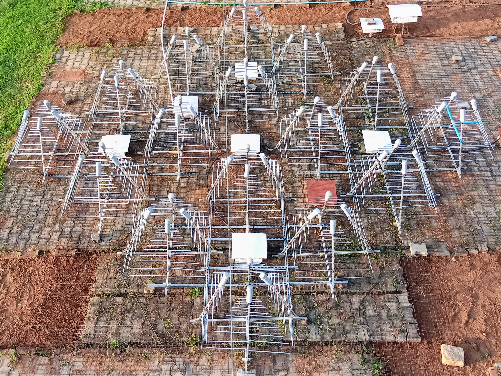

About GBD-DART
The Gauribidanur Diamond Array Radio Telescope (GBD-DART) is a new, low-frequency radio antenna array with 64 log-periodic dipole array (LPDA) and associated receivers, developed and deployed at the Gauribidanur observatory (13.604 N, 77.427 E). It studies bright pulsars and solar transients in the frequency range of 130–350 MHz. The LPDAs are arranged in a checkerboard pattern. The orthogonal polarisation feeds are formed using pairs of opposite LPDAs. A diamond-shaped (tilted square) array configuration was chosen for high sidelobe suppression in the East-West and North-South directions. The tile measures 5.9 by 5.9 m, with diagonals along North-South and East-West directions, each about 8.3 m. The tile operates as a phased array in transit-observing mode and has been successfully detecting strong pulsars and solar flares for eleven months. The current instantaneous observation bandwidth is 16 MHz, limited by the present digital backend. Array operations are streamlined for remote use. In addition to its scientific role, the system serves as a training platform for radio astronomy using a simple, low-cost telescope.
Presently, the pipeline is configured to observe pulsars between 170 and 196 MHz, with a daily cadence. Recorded data are reduced in-line immediately following each observation, nearly matching the observation time at a 1:1 ratio. The archives are routinely backed up to a remote system via the internet. The paper presents the architecture of the signal-processing pipeline developed, its validation, and initial polarimetric results for five bright pulsars at 175 MHz. Results also include dispersion measure (DM), rotation measure (RM) estimates and single-pulse study results, as well as from monitoring the spin-down of the Crab pulsar over 200 days of observation
- Location: Gauribidanur observatory (13.604 N, 77.427 E).
- Antenna Array: 64-dipole LPDA arranged in a diamond-shaped checkerboard layout.
- Frequency Range: Operations cover the 130–350 MHz band.
- Backend Specs: Features a dual-polarised digital backend with a 16 MHz instantaneous bandwidth.
This internal node hosts the uncalibrated baseband files, folded .ar profiles, and dynamic spectra generated daily by the array.
If you use data or code from this archive, we request that you cite the foundational commissioning paper:
GBD-DART-I : Pulsars and transient source detections
A. Pandian B., J. Bagchi, P. Thiagaraj, et al. (2026).
Publications of the Astronomical Society of Australia (PASA).
DOI: 10.1017/pasa.2026.10231
Archive Calendar
Select an observation date below.
Sep 2026
All-Time Metadata Trends
Scans the entire local archive for the selected pulsar to plot variables over time.